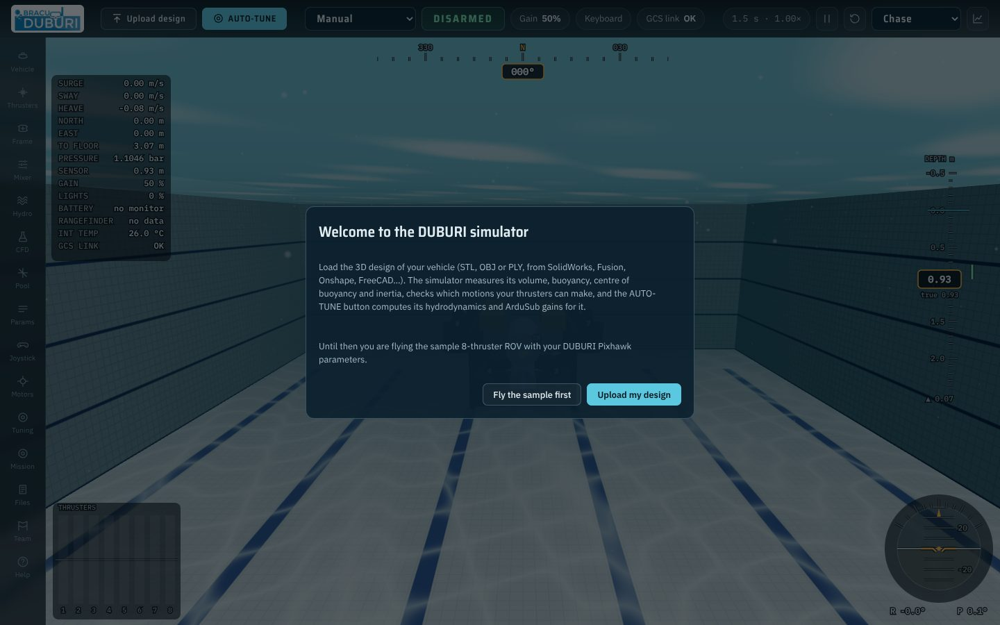
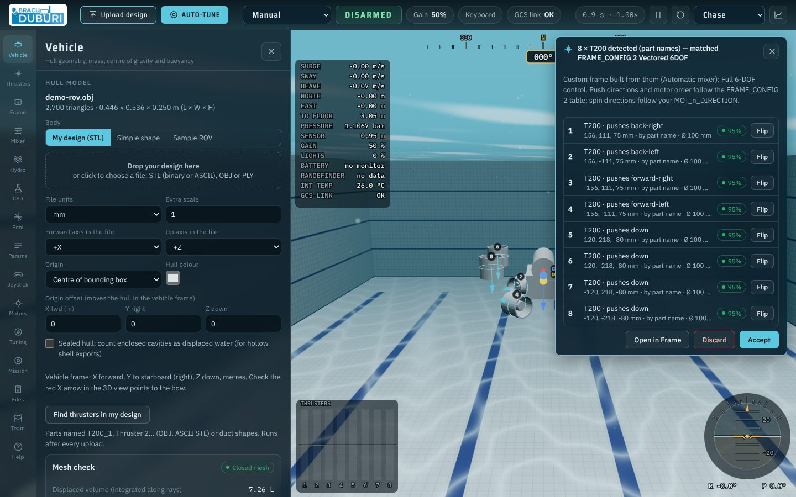
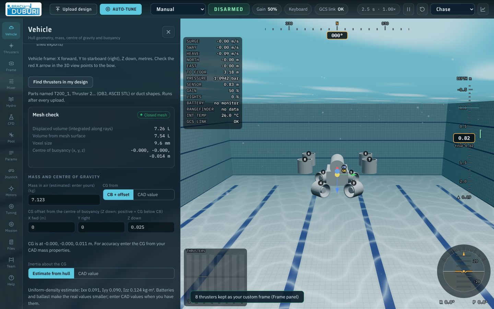
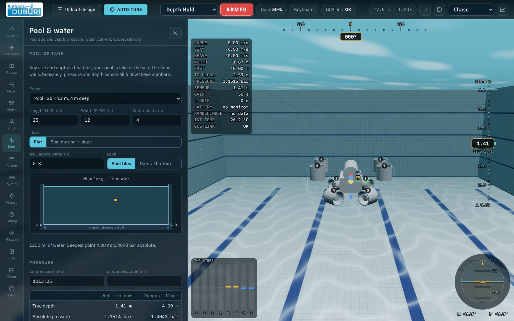
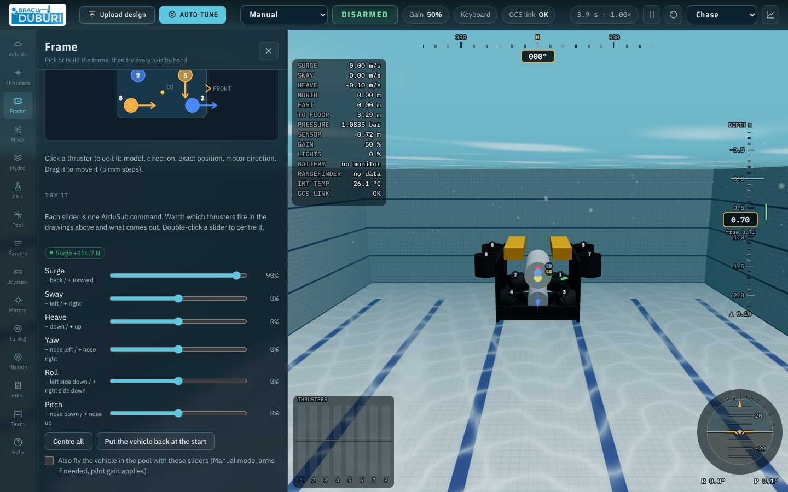
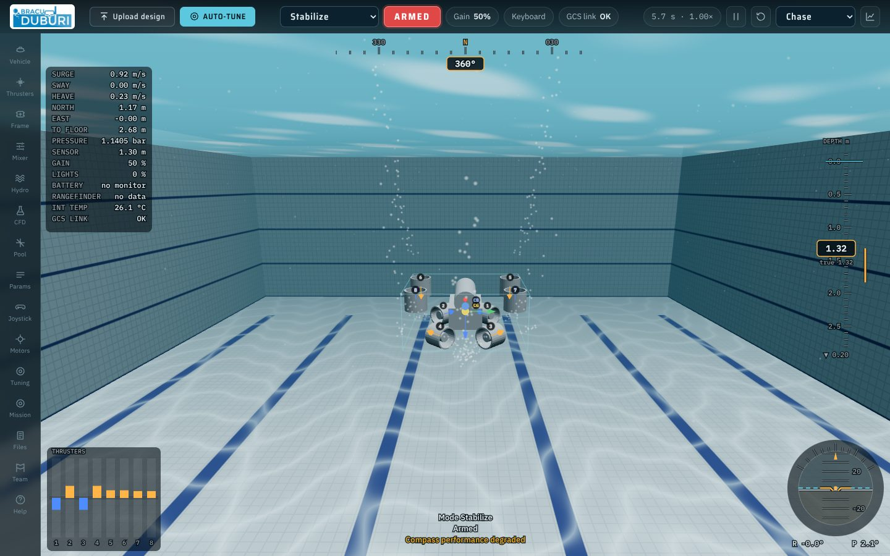
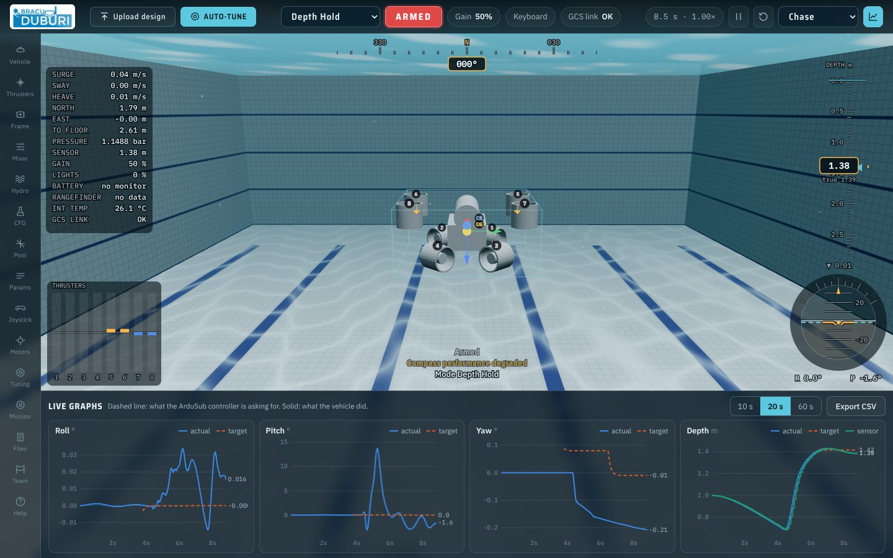
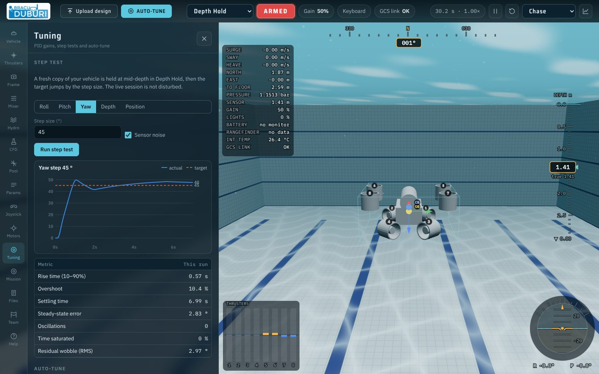
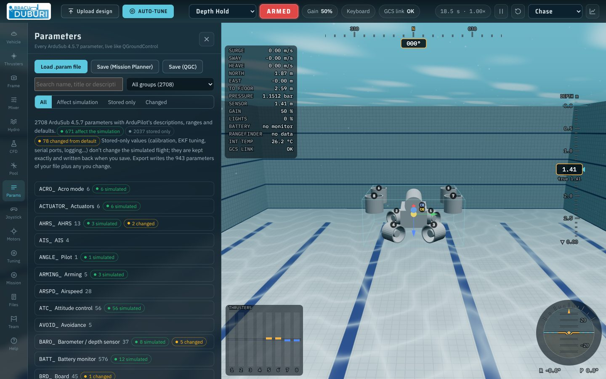
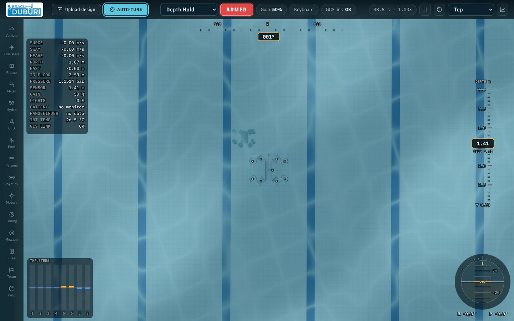

Fly the robot before it gets wet.
DUBURI is a virtual pool that runs in the browser. Give it your ROV's 3D design and your Pixhawk parameter file, and it flies the vehicle with a line-by-line port of the ArduSub 4.5.7 controllers on top of a Fossen 6-DOF hydrodynamic model.
Use it to check a thruster layout, catch wrong parameters, tune gains and practise piloting without risking the vehicle. Nothing is installed: the whole simulator is one HTML page (Chrome or Edge with WebGL2).
| You give it | It works out | You get back |
|---|---|---|
| 3D design (STL, OBJ, PLY) | Volume, buoyancy, centre of buoyancy, inertia, thruster positions | Whether it floats level, which axes it can control |
| Mass and centre of gravity | Righting moment, natural roll and pitch periods | Stability before you build |
| Thruster models and directions | Mixer table, authority per axis, battery draw | A layout check and a C++ mixer for custom frames |
Pixhawk .param file | The same controllers ArduSub runs, with your gains | Step responses, AUTO-TUNE suggestions, an updated .param |
| Pool size, water, waves | Pressure, density, depth-sensor reading, wave forces | Realistic depth hold and failsafe behaviour |
Quick start#
Nine steps from your CAD file to a tuned .param file. Click any screenshot to enlarge it.
Open the simulator
Open jarifalam13.github.io/DUBURI_SIM in Chrome or Edge. The first screen offers Fly the sample first (an 8-thruster ROV already loaded with the DUBURI Pixhawk parameters) or Upload my design.

Welcome. The sample ROV flies with your DUBURI parameter file from the start. Upload your design
Click Upload design in the top bar, or drop the file anywhere. In Vehicle, set the file units (Fusion 360 and SolidWorks export in mm), which axis points forward and which points up. Check that the red X arrow in the 3D view points to the bow.
If the parts are named (
T200_1,Thruster 2…) or the thrusters have ducts, they are found automatically and a custom frame is built from them. Click Accept, Flip a thruster that pushes the wrong way, or Discard.
Thruster detection. 8 × T200 found by part name and matched to FRAME_CONFIG 2 (Vectored 6DOF), each with its push direction and confidence. Enter the real mass and centre of gravity
Scroll down in Vehicle to Mass and centre of gravity. Enter the mass in air from a scale and the CG from your CAD mass properties. The In the water box then shows whether the vehicle floats or sinks, the distance between centre of buoyancy and CG (GM), and the natural roll and pitch periods. Make neutral sets the mass for neutral buoyancy.

Mass, CG and buoyancy. Every hydrostatic number the plant uses is shown here. Set the pool and water
Pool sets the pool length, width and depth (default 25 × 12 × 4 m), a flat or sloped floor, fresh or sea water, current, turbulence and waves, the depth sensor (Bar02, Bar30 or custom) and the depth rating of your housings. Tick Positioning system present only if the real vehicle has a DVL or USBL: Position Hold, Auto and Guided need it.

Pool & water. Pressure, buoyancy and the depth-sensor reading all follow from these settings. Check the frame
Frame shows every ArduSub
FRAME_CONFIGas a card, plus Automatic, which builds the mixer from where your thrusters really are. Under Try it, move a slider: the thrusters that fire light up (orange forward, blue reverse) and the resulting force or torque is printed above the sliders.
Try it. Surge at 90 % gives +116.7 N with this layout. A slider that moves the vehicle the wrong way means a direction or MOT_n_DIRECTIONis wrong.Arm and fly
Press Enter to arm. W/S forward and back, A/D yaw, Q/E strafe, R/F up and down. Keys 1–6 change mode. A gamepad works too (see Flying).

Flying. Heading tape at the top, depth tape on the right, thruster bars bottom left, attitude bottom right. Hold depth and watch the graphs
Press 3 for Depth Hold and G for the live graphs. Dashed lines are what ArduSub asks for, solid lines what the vehicle did. Export CSV saves the data.

Live graphs. The depth plot shows target, true depth and what the depth sensor reports. Tune
Tuning lists the ArduSub gains and runs a step test on a fresh copy of the vehicle: rise time, overshoot, settling time and steady error are measured. AUTO-TUNE (top bar) computes added mass and damping for your design and suggests gains; nothing changes until you click Apply.

Step test. A 45° yaw step: 0.57 s rise time, 10.4 % overshoot. Take it to the vehicle
In Params, Save (Mission Planner) or Save (QGC) writes every parameter of your file plus the ones you changed. Load it on the Pixhawk with QGroundControl or Mission Planner and check the changed values before the first dive.

Parameters. 2708 ArduSub 4.5.7 parameters: 671 affect the simulation, the rest are kept exactly and written back.
Panel tour#
The rail on the left of the simulator opens these panels, in the order you usually need them. Click a card to see the full screenshot.
| Key | Action |
|---|---|
| W S | Forward / back |
| A D | Yaw left / right |
| Q E | Strafe left / right |
| R F (Space C) | Ascend / descend |
| I K · J L | Pitch · roll input (vehicles with 6-DOF control) |
| Enter | Arm / disarm |
| 1…6 | Manual, Stabilize, Depth Hold, Acro, Position Hold, Surface (other modes from the mode menu) |
| + − | Pilot gain up / down (JS_GAIN_STEPS) |
| V | Next camera (Chase, Orbit, Camera, Top, Free) |
| G | Live graphs |
| P | Pause |
| Backspace | Reset the vehicle to its start position |
| Shift | Presses the joystick button set to shift (BTNn_FUNCTION = 1) |
| Control | Action |
|---|---|
| Left stick | Up / down (throttle) and yaw |
| Right stick | Forward and lateral |
| Triggers | Ascend / descend, or pitch / roll when the matching button function is held |
| Buttons | Follow your BTNn_FUNCTION / BTNn_SFUNCTION parameters exactly as ArduSub does (QGC button numbering); hold the shift button for the second function |
The Controller panel lists every button, its function with and without shift, lights, camera mount, relays, servo outputs and RC1–16. If the gamepad is not detected, press any button once; some embedded browser views hide controllers.
| Readout | Meaning |
|---|---|
| SURGE · SWAY · HEAVE | Body-frame velocity, m/s (forward, right, down) |
| NORTH · EAST | Position in the pool, m from the centre |
| TO FLOOR | Distance from the vehicle to the pool floor, m |
| PRESSURE · SENSOR | Absolute pressure at the depth sensor, bar, and the depth ArduSub computes from it, m |
| Depth tape | ArduSub's depth estimate in the box, with the true CG depth under it and the target depth marker |
| GAIN · LIGHTS | Pilot gain and light brightness, % |
| BATTERY | Voltage, current, mAh used, % left (shows "no monitor" when BATT_MONITOR = 0) |
| RANGEFINDER · INT TEMP | Downward rangefinder distance, internal temperature |
| GCS LINK | Ground-station link state; the topbar toggle drops it to test the GCS failsafe |
| THRUSTERS | One bar per motor output: orange forward, blue reverse |
| Banners | Active failsafes and PreArm failures, as ArduSub reports them |

Thruster auto-detection#
Runs after every upload, and from Find thrusters in my design in Vehicle or Frame.
| Format | Part names kept | How thrusters are found |
|---|---|---|
| OBJ (recommended) | yes objects and groups | By name, then by shape |
| ASCII STL, multi-body | yes one solid per body | By name, then by shape |
| Binary STL | no | By shape only |
| PLY | no | By shape only |
- Names. Parts called
T200_1,Thruster 2,Assembly/T200 (4)/Nozzleare recognised; the number becomes the motor number. Mounts, brackets and screws are skipped. - Shape. The mesh is split into connected parts; each is tested as a surface of revolution. A duct needs a complete outer and inner wall. Outside diameter ≈ 100 mm → T200, ≈ 140 mm → T500, otherwise a generic thruster sized from the inside diameter. Pipes, rods and housings are rejected.
- Direction and order. Geometry gives the axis but not which way it pushes, so each thruster's force and torque is matched against the rows of your
FRAME_CONFIGtable (with an optimal one-to-one assignment). That picks the push direction and the motor number. Spin direction followsMOT_n_DIRECTION.
The browser cannot read Fusion archives. Open the design in Fusion, rename the thruster components T200_1 … T200_8 to match your motor outputs, then File → Export → OBJ (or Utilities → 3D Print → OBJ). Upload with units = mm.
Typical designs take 50–90 ms; a 370 000-triangle mesh about 0.45 s. A short hollow housing 85–115 mm across can look like a T200: check the list and discard it.
Flight modes#
The same entry rules as ArduSub 4.5.7 (ArduSub/mode.h): a mode that needs position is refused without a position estimate, and leaving a manual-throttle mode needs a working depth sensor.
| Key | Mode | No. | Position | Depth sensor | What it does |
|---|
Surface needs a position estimate in ArduSub 4.5.7, so a leak or GCS failsafe set to "surface" only warns on a vehicle without DVL/USBL. The simulator reproduces this.
Failsafes#
Ported from ArduSub/failsafe.cpp. The last column is the value in the DUBURI Pixhawk file.
| Failsafe | Triggers when | Parameter and actions | ArduSub default | DUBURI file |
|---|---|---|---|---|
| Pilot input | No joystick message for FS_PILOT_TIMEOUT (3 s) | FS_PILOT_INPUT: 0 off · 1 warn · 2 disarm | 2 disarm | 0 off |
| GCS heartbeat | No ground-station heartbeat for 2.5 s | FS_GCS_ENABLE: 0 off · 1 warn · 2 disarm · 3 depth hold · 4 surface | 2 disarm | 0 off |
| Leak | A leak probe reads wet (housing past its rating) | FS_LEAK_ENABLE: 0 off · 1 warn · 2 surface | 1 warn | 0 off |
| Internal pressure | Pressure inside the housing above FS_PRESS_MAX (105 000 Pa) | FS_PRESS_ENABLE: 0 off · 1 warn | 0 off | 0 off |
| Internal temperature | Above FS_TEMP_MAX (62 °C) | FS_TEMP_ENABLE: 0 off · 1 warn | 0 off | 0 off |
| Battery | Voltage below BATT_LOW_VOLT for BATT_LOW_TIMER (10 s), or mAh used past BATT_LOW_MAH; same for critical | BATT_FS_LOW_ACT, BATT_FS_CRT_ACT: 0 none · 2 disarm · 3 surface | 0 none | no monitor (BATT_MONITOR 0) |
| EKF | Estimator variance stays above FS_EKF_THRESH (0.8) | FS_EKF_ACTION: 0 off · 1 warn · 2 disarm | 0 off | 0 off |
| Crash | Attitude error above 30° for 2 s | FS_CRASH_CHECK: 0 off · 1 warn · 2 disarm | 0 off | 0 off |
| Depth sensor | The depth sensor stops reporting while a depth mode is active | Always on: switches to Manual | on | on |
| Terrain | An Auto/Guided target that follows the bottom with no healthy rangefinder for 1 s | FS_TERRAIN_ENAB: 0 disarm · 1 hold position · 2 surface | 0 disarm | 0 disarm |
Pilot input (default disarm), GCS heartbeat (default disarm) and leak (default warn) are all 0. Try each one in the simulator first: set the parameter in Params, then drop the joystick or click GCS link in the top bar. With FS_GCS_ENABLE = 3 the vehicle switches to Depth Hold about 2.5 s after the link drops.
Architecture#
Two parts: a set-up pipeline that turns your design into a hydrodynamic model once, and a closed loop that runs 400 times per simulated second. Click a box for details, or trace one loop.
The Fossen 6-DOF model#
The equations of motion used in marine robotics, from Thor I. Fossen, Handbook of Marine Craft Hydrodynamics and Motion Control (Wiley, 2011/2021). Implemented in src/physics/body.js.
A rigid body in water can move in six ways at once: three translations and three rotations. Those are the six degrees of freedom (DOF). Fossen's model is Newton's second law written for all six together, with the extra forces water adds: the water the vehicle carries along when it accelerates, the drag, and buoyancy.
| DOF | Motion | Velocity | Force / moment | Position / angle |
|---|---|---|---|---|
| 1 | Surge (forward) | \(u\) | \(X\) | \(x\) north |
| 2 | Sway (right) | \(v\) | \(Y\) | \(y\) east |
| 3 | Heave (down) | \(w\) | \(Z\) | \(z\) depth |
| 4 | Roll | \(p\) | \(K\) | \(\phi\) |
| 5 | Pitch | \(q\) | \(M\) | \(\theta\) |
| 6 | Yaw | \(r\) | \(N\) | \(\psi\) |
Frames: world North-East-Down with the origin at the still-water surface in the middle of the pool; body Forward-Right-Down with the origin at the centre of gravity (CG). Positive roll is right side down, positive pitch nose up, positive yaw nose right (ArduPilot convention).
The code solves one linear system per evaluation. Everything except the inertia term is moved to the right-hand side:
State vector, 13 numbers: \(y=[x,y,z,\ q_w,q_x,q_y,q_z,\ u,v,w,\ p,q,r]\).
Kinematics: from body velocity to motion in the pool
Position changes with the body velocity rotated into the world frame. Attitude is a unit quaternion (no gimbal lock), turned into roll, pitch and yaw only for display, with ArduPilot's 3-2-1 order.
Water velocity (current, turbulence, wave orbits) is rotated into the body frame, and only the linear part is made relative; the water is not rotating.
Mass and added mass
Because the body origin is the CG, the rigid-body inertia is block-diagonal. When the vehicle accelerates it also has to accelerate some water: that is the added mass \(M_A\), a full 6×6 matrix computed by the panel method (see Added mass and damping). It shrinks with the submerged fraction \(\sigma\) at the surface and grows near the floor, walls and surface (image effect).
Coriolis, centripetal and Munk terms
A body that moves and rotates at once feels forces that do no work but redirect momentum. For the water this is the Munk moment: an elongated hull moving at an angle is turned broadside, which is why ROVs need yaw control at speed.
Damping
Fully coupled 6×6 linear and quadratic matrices. The linear part dominates at low speed, the quadratic part (form drag, \(\tfrac12\rho C_d A v|v|\)) at higher speed. Damping fades as the vehicle leaves the water, and grows near the surface where it makes waves.
Buoyancy and gravity
Weight acts at the CG, so it never makes a moment. Buoyancy acts at the CB; when the CB is above the CG the pair makes the righting moment that keeps the vehicle level. Water gets denser with depth and the hull can compress, so buoyancy changes slightly with depth. At the surface the hull is cut into volume elements, each partly submerged under the local wave height.
A housing past its depth rating leaks through an orifice against the air inside it, compressed by Boyle's law; the flooded water adds weight and mass and wets the leak probe:
Water, pressure, waves and current
Density comes from temperature and salinity (Tanaka 2001 for fresh water plus the UNESCO EOS-80 salt term), viscosity from Vogel's equation. Pressure is integrated down the water column with a compressible equation of state, so a Bar30 reads what it would in a real pool.
Waves are linear (Airy) waves over finite depth. The wavenumber solves the dispersion relation by Newton's method; particle velocity and acceleration decay with depth.
Accelerating water pushes the vehicle even when it is still: the Froude–Krylov force plus the added-mass reaction. Without it a neutral vehicle would not follow the waves.
Turbulence is a first-order Gauss–Markov gust, then smoothed so it can be differentiated:
Floor and walls
Contact points are the extreme corners of the voxelised hull in 26 directions. Each one is tested against the floor (flat or sloped) and the four walls separately. A spring–damper pushes it out with Coulomb friction; the gains are capped from the vehicle's mass and the step size so the integration stays stable for a 2 kg or a 30 kg vehicle.
Integration
Each 1.25 ms physics step: thrusters, battery and flooding are advanced once; then classic 4th-order Runge–Kutta integrates the state, split into more sub-steps when damping would make it stiff; the quaternion is renormalised after each.
- Added mass changes with submergence and wall distance but is frozen within a step; the \(\dot M_A\nu\) term is not modelled.
- Quadratic damping uses the column form \(D_{Q,ij}|\nu_j|\nu_j\) with a full matrix.
- A Froude–Krylov term is added for waves and gusts; the water itself does not rotate.
- The image effect uses distances from the CG along world axes.
PWM to thrust
A measured table (Blue Robotics T200 / T500 or your own) or a parametric curve gives static thrust from the PWM pulse. Inside the deadband thrust is exactly zero. A motor reversed with MOT_n_DIRECTION = −1 uses the curve mirrored about 1500 µs, so the strong side of the propeller stays the strong side.
Rotor speed, voltage and current
The propeller cannot change speed instantly. A normalised rotor speed \(n\) follows the command with a faster time constant when speeding up than when braking, and pauses at zero when it reverses (the ESC re-commutates). Thrust grows with \(n|n|\). Thrust and current follow the battery voltage through the Blue Robotics tables at 10–20 V.
In-flow, ventilation, hull and reaction torque
Thrust falls when water already flows through the propeller (advance ratio), near the surface where the propeller sucks air, and when the jet hits the hull. The spinning propeller also twists the vehicle; mirror-image thrusters get opposite hands so a correctly built vehicle cancels it.
Battery
A Thevenin model: open-circuit voltage from state of charge, an internal resistance that rises when the pack is nearly empty, and one RC branch for the slow voltage recovery after a burst. Default: 4S Li-ion, 18 Ah, 0.03 Ω, plus 2 A for the electronics.
Added mass and damping from your design#
Where the matrices \(M_A\), \(D_L\) and \(D_Q\) come from. AUTO-TUNE runs both methods at several resolutions and reports an uncertainty for each value.
Mass properties
The hull is voxelised (cell ≈ largest size / 56, at least 3 mm). Displaced volume and CB are integrated exactly along rays in x, y and z, weighted by how well each axis sees the surface; thin 12.7 mm plates come out within 0.04 %. Inertia uses uniform density and the parallel-axis theorem about the CG, unless you enter CAD values.
Panel method (BEM) for added mass
A Hess–Smith constant-source panel method on a smooth mesh of the hull, for a deeply submerged body in ideal flow. Six problems, one per DOF, share one influence matrix and are solved with GMRES; then the solution is extrapolated from three mesh sizes (900, 1800, 3600 panels).
Before AUTO-TUNE runs, the default is a Lamb ellipsoid with the hull's proportions and volume, with strip-theory floors on the rotational terms, moved to the CG.
Lattice-Boltzmann CFD for damping
A virtual tow tank on the GPU. D3Q19 lattice, regularised BGK collision with a Smagorinsky turbulence model, Bouzidi interpolated walls (moving walls for rotation), and forces by momentum exchange.
Each DOF is towed (or spun) at two Reynolds numbers, 500 and 2000, on up to three grids. The coefficients are fitted to \(C(Re)=C_\infty+K/Re\) and scaled to your vehicle in water: \(C_\infty\) becomes quadratic damping, \(K\) linear damping. The fit is projected onto a dissipative matrix so it can never add energy.
Rotation runs use a frozen hull with a moving-wall condition, so rotational damping carries an extra 30 % model uncertainty.
Sensors#
The firmware never sees the true state, only what these models report. src/ardusub/sensors.js
| Sensor | Rate | Model |
|---|---|---|
| IMU (gyro, accelerometer) | 1 kHz | Truth interpolated between ticks, plus white noise (0.0015 rad/s, 0.04 m/s² per sample), a turn-on bias (0.02 °/s) and a bias random walk (0.0005 °/s/√s); harmonic notches, then a 2-pole low-pass at INS_GYRO_FILTER / INS_ACCEL_FILTER (20 Hz) |
| Depth (Bar02 / Bar30) | 50 Hz → 10 Hz | Absolute pressure at the sensor's mounting point, 2 mm noise, quantised (Bar30 0.2 mbar), 20 ms latency; averaged at 10 Hz and converted as AP_Baro does |
| Vertical estimator | 400 Hz | 3-state Kalman filter (height, climb rate, accel bias) standing in for EKF3's vertical channel |
| Compass | 10 Hz | Earth field rotated into the body, plus motor-current interference and COMPASS_MOT_* compensation |
| Rangefinder | 10 Hz | Ray cast down the body axis to floor and walls, \(d=t+(0.005+0.002t)\eta\); status from RNGFND1_MIN/MAX_CM |
| Battery monitor | 10 Hz | Pack voltage and current with noise, mAh counting, resistance estimate as AP_BattMonitor |
| Leak probe | 3 Hz | Wet when flooded volume exceeds 1 mL; LEAKn_LOGIC, analog or digital, 3 s hold |
| Temperature | 5 Hz | Enclosure: \(\tau\dot T=T_{water}+Q R_{th}-T\), \(Q=8\ \text{W}+0.03|VI|\), \(\tau=600\) s |
| DVL / USBL (optional) | 10 Hz | Position with 1 cm noise, only when Positioning system present is ticked |
Depth: the AP_Baro water formula
Vertical estimator
A small Kalman filter propagates height and climb rate with the accelerometer, delayed by EK3_HGT_DELAY (60 ms), and fuses each 10 Hz depth reading through an innovation gate.
EK3_HGT_I_GATE/100 = 5Attitude: the estimate is the true attitude with a slow Gauss–Markov error (0.02°), the unlearned gyro bias, and a yaw drift when there is no compass or DVL. AHRS_TRIM is cancelled by an equal board misalignment, as on a calibrated vehicle.
ArduSub control#
Ported from ArduSub 4.5.7 and compared line by line with the C++ (libraries/AC_PID, AC_AttitudeControl, AP_Motors, ArduSub/). Units follow ArduPilot: centidegrees and cm at the interfaces.
The control chain for one tick, from stick to propeller:
- Pilot input (joystick.cpp): MANUAL_CONTROL x, y, z, r become RC channels 1–6, scaled by the pilot gain.
- Flight mode turns them into targets: lean angles, a yaw rate, a climb rate, or a position.
- Attitude controller: input shaping → quaternion error → angle P (square-root controller) → body-rate target.
- Rate PIDs: body-rate error → roll, pitch, yaw demands.
- Depth controller: position P → velocity PID → acceleration PID → throttle.
- Mixer (AP_Motors6DOF): six demands × factor table → one output per motor → PWM.
PID controllers
AC_PID is used for the rate loops (ATC_RAT_*) and vertical acceleration (PSC_ACCZ_*). Target and error are low-pass filtered, the derivative is taken on the filtered error, and the integrator stops growing while the motors are saturated.
FLTT, FLTE, FLTD cut-offs (Hz); 0 disables the filterSMAX (1 when SMAX = 0); PDMX caps \(|P+D|\)The SMAX slew limiter watches how fast P+D changes. When the slew rate stays above SMAX it lowers the gain, which stops oscillation before it builds up:
The square-root controller is ArduPilot's shaped P controller: linear near the target, then a square root so the commanded rate never asks for more than the allowed acceleration.
Attitude controller
The target attitude is a quaternion \(q_T\). Pilot inputs are shaped into a smooth feed-forward rate \(\omega_t\) with time constant ATC_INPUT_TC, and \(q_T\) advances by \(\omega_t\Delta t\) each tick. The error to the measured attitude \(q_B\) is split into a tilt part and a heading part, and each goes through the angle P.
ATC_ANG_*_P 6, ATC_ACCEL_*_MAX 110 000 cd/s² (1100 °/s²), ATC_INPUT_TC 0.15 s, ATC_RATE_Y_MAX 180 °/sDepth and position
AC_PosControl runs a cascade: position error → velocity target → acceleration target → throttle around the hover value. Pilot climb commands are jerk-limited by PSC_JERK_Z and the filter cut-offs.
MOT_THST_HOVER, forced to 0.5 at boot by ArduSubPSC_POSZ_P 3, PSC_VELZ_P 8, PSC_ACCZ_P 0.5, PSC_ACCZ_I 0.1, PILOT_SPEED_UP 100 cm/s, PILOT_ACCEL_Z 100 cm/s²The XY controller (Position Hold, Guided, Auto) works the same way in two dimensions. ArduSub turns its lean-angle output into forward and lateral thrust instead of tilting the vehicle:
Motor mixer
Each motor has a row of six factors (roll, pitch, yaw, throttle, forward, lateral) from the FRAME_CONFIG table or from the automatic allocation. MOT_n_DIRECTION multiplies the result. For the Vectored 6DOF frame (the DUBURI file, FRAME_CONFIG = 2) the attitude-plus-throttle part and the yaw-plus-translation part are normalised separately:
A spool state machine (shut down → ground idle → spooling up → unlimited) ramps the output over MOT_SPOOL_TIME (0.5 s) after arming. MOT_BAT_CURR_MAX scales every output down when the predicted current is too high. Motor \(m\) drives the servo output whose SERVOn_FUNCTION is 33 + \(m\), and the ESC sees the previous tick’s value, as on the Pixhawk.
Main loop and scheduler
Each 2.5 ms tick runs ArduSub's fast loop in the same order as ArduSub.cpp, then the scheduled tasks whose interval has passed. Two physics steps follow with the PWM held.
- Read IMU, AHRS and inertial navigation (the sensor models).
- Run the rate controller (not in Manual or Motor Detect).
- Motors output.
- EKF yaw-reset check, flight mode update, surface and bottom detector.
- Scheduled tasks (table below).
- Physics: two 1.25 ms steps of the plant and environment.
| Task | Rate | Every n ticks | What it does |
|---|---|---|---|
gcs update_receive | 400 Hz | 1 | MANUAL_CONTROL and heartbeats from the simulated GCS |
fifty_hz_loop | 50 Hz | 8 | Pilot-input, crash, EKF and depth-sensor failsafes; RC read; joystick and servo outputs |
read_rangefinder | 20 Hz | 20 | Rangefinder and SurfTrak terrain offset |
update_batt_compass | 10 Hz | 40 | Battery monitor and failsafe, compass |
update_altitude | 10 Hz | 40 | Depth sensor update and health |
update_turn_counter | 10 Hz | 40 | Tether turn counter |
temperature | 5 Hz | 80 | Internal temperature |
three_hz_loop | 3 Hz | 133 | Leak, internal pressure and temperature, GCS and terrain failsafes |
one_hz_loop | 1 Hz | 400 | Pre-arm status, notch sample rate |
AP_Arming update | 1 Hz | 400 | PreArm messages every 30 s |
The 3 Hz loop runs every 133 ticks, which is 3.008 Hz: AP_Scheduler computes it the same way. Telemetry is recorded at 50 Hz (12 minutes in memory).
AUTO-TUNE#
src/sim/tuning.js. Every test runs on a fresh copy of your vehicle in open water; results are suggestions and nothing is applied until you click.
- Hydrodynamics. Converged panel-method added mass and CFD damping for your hull, each with its uncertainty.
- Rate loops, inner loop first, following ArduPilot's AC_AutoTune: twitch the axis, raise D until the rate bounces back more than 10 % (AGGR 0.1), then raise P until the rate overshoots, then bisect between good and bad.
- Angle P by angle twitches of 20° (30° in yaw), backed off to 90 %;
ATC_ACCEL_*_MAXfrom the measured acceleration. ATC_INPUT_TC: kept unless the tuned loops overshoot more than 10 % with it.- Depth (accel → velocity → position) and, with a DVL, position gains by a grid search refined with golden-section steps on the step-response cost.
- Check: each axis is compared with your current gains on the full tuned set; an axis that was better before keeps its gains.
On a well-damped ROV the D search can reach the top of its range without ever seeing a bounce; the panel marks such values as "at the limit".
Parameters#
All 2708 parameters ArduSub 4.5.7 defines, generated from the ArduPilot source by tools/gen-params.mjs, with the values from the DUBURI Pixhawk file.
- Loading. Mission Planner (
NAME,value) and QGroundControl (sysid compid NAME value type) files are both read. Every line is kept; names ArduSub 4.5.7 does not define are kept too and written back unchanged. - Simulated or stored. 671 parameters change what the simulator does (gains, mixer, failsafes, sensors, joystick, outputs). The other 2037 (calibration, serial ports, logging, EKF tuning…) are stored and exported exactly.
- Validation. Edits are clamped to the ArduPilot range; values loaded from a file are never changed.
MOT_THST_HOVERis forced to 0.5 at boot, as ArduSub does. - Legacy names are converted on import:
ATC_RAT_*_FILT→FLTE,FS_BATT_*→BATT_*,MNT_→MNT1_,CAM_→CAM1_. - Export writes the 943 names of your file plus any you changed, with full float precision; the QGC format carries the right MAVLink type per parameter.
Accuracy and limits#
Engineering estimates of how closely the real vehicle will behave like the simulation, assuming you uploaded your own design with measured mass and CG. They have not been checked against pool data yet.
| What | Estimated match | 0 – 100 % | Why |
|---|
In short: the kind of behaviour (which way it moves, whether a gain set oscillates, what each mode does) matches about 90 %; the numbers (speed, overshoot, settling time) about 70–80 %. Gains tuned here are in the right range but may need 10–30 % adjustment in the pool.
Not modelled
- The tether. A real tether adds drag and pulls the vehicle, most in sway and at depth.
- Wake interaction between thrusters, windmilling drag of a stopped propeller, wave radiation damping.
- EKF3 itself (a simpler estimator with realistic noise stands in), GPS, and a real MAVLink connection.
- Temperature changing with depth; thrusters and electronics changing with pressure.
Weigh the vehicle, find the CG with a hang test, and, if you can, measure thrust on a stand. Then do three simple pool runs (full forward, full up, a yaw turn) and compare the logs with the same runs here.
Presenting the simulator#
A one-minute pitch, a five-minute demo and the questions a supervisor is likely to ask.
One-minute pitch
"Sir, the DUBURI simulator lets us test the robot on a computer before it goes in the water. It uses our own 3D design and the exact parameter file that is on our Pixhawk."
"Inside, the ArduSub 4.5.7 control code is ported line by line and checked against the ArduPilot source. The motion is computed with the Fossen 6-DOF equations that marine robotics uses."
"So we can check the thruster layout, the PID gains and depth hold before a pool session. That saves pool time and battery, and lowers the risk of damaging the vehicle."
"The numbers won't match exactly. Our estimate is about 90 % for the kind of behaviour and 70–80 % for numbers like speed and overshoot. One measured pool test would let us calibrate it."
Five-minute demo
- Open the simulator and click Fly the sample first.
- Press Enter to arm, fly with W A S D and R/F.
- Press 3 (Depth Hold), let go of the keys, press G: the vehicle keeps its depth and the graphs show target and actual.
- Open Frame and move the Surge slider: show which thrusters fire and the force that comes out.
- Open Params: our 943 Pixhawk parameters are loaded; change a gain and the effect is immediate.
- Open Tuning and run a yaw step test: rise time, overshoot and settling time appear.
- Set
FS_GCS_ENABLEto 3, click GCS link: about 2.5 s later the vehicle switches to Depth Hold on its own. - Upload our design (OBJ) and show the thrusters being found automatically.
AUTO-TUNE runs the panel method and CFD and can take several minutes; start it before the meeting if you want to show its result.
Likely questions
Is this the real ArduSub firmware?
No. It is a JavaScript port of the ArduSub 4.5.7 control code (motors, attitude, PID, depth and position control, modes, failsafes, joystick), compared line by line with the C++ source. It is not the firmware binary (that would be SITL), and EKF3 is replaced by a simpler estimator.
How close is it to the real robot?
About 90 % for the kind of behaviour and 70–80 % for the numbers, as an estimate. The largest uncertainties are drag (CFD, ±20–30 %), the missing tether and the mass and CG we enter. See Accuracy and limits.
Why not ArduPilot SITL with Gazebo?
SITL runs the real firmware and is a good cross-check, but it needs a Linux setup and a separately built physics model. DUBURI runs in any browser, builds the hydrodynamic model from our own CAD, and loads our Pixhawk file directly. Both can be used together.
What do we need to measure?
Mass in air, centre of gravity, ideally thrust per thruster, and one short pool test to compare with the simulation.
Can the exported parameters harm the vehicle?
The export is an ordinary .param file with your original values plus the ones you changed. Review the changed values in QGroundControl before writing them, as with any parameter change.
Troubleshooting#
"Compass performance degraded" every time I arm
The DUBURI file has GPS_TYPE = 1 and there is no EKF origin, so ArduSub prints this warning. Real ArduSub does the same. Set GPS_TYPE = 0 if the vehicle has no GPS.
"Mode change failed: … requires position"
Position Hold, Surface, Guided, Auto and Circle need a position estimate. Tick Positioning system present (DVL / USBL) in Pool & water, only if the real vehicle has one.
"Mode change failed: … need alt estimate"
Depth modes need a working depth sensor. Check the depth sensor in Pool & water and BARO_EXT_BUS / BARO_PROBE_EXT.
The vehicle will not arm
Read the PreArm banner on the HUD: it gives ArduSub's own reason. Arming also needs a joystick button mapped to arm or arm-toggle, and is refused while the GCS link is down.
The gamepad is not detected
Press any button once. Use Chrome or Edge. Some embedded views hide controllers: save the page from Logs & files and open the file directly.
The 3D view is blank
The simulator needs WebGL2. Turn on hardware acceleration in the browser settings, or try Chrome or Edge.
A thruster was detected that is not a thruster
Short hollow parts 85–115 mm across look like a T200 duct. Discard the detection or rename the part so it contains "mount" or "housing".
Development#
Plain ES modules, built into one HTML file with esbuild. GPL-3.0-or-later, because the control code is a port of ArduPilot.
npm install npm test # 185 unit tests npm run build # dist/duburi-sim.html, docs/index.html (GitHub Pages) npm run build:wasm # recompile src/wasm/kernels.c (clang with wasm32) npm run validate:cfd # sphere drag through the full CFD pipeline node tools/gen-params.mjs # regenerate the parameter table (needs an ArduPilot checkout)
| Folder | Contents |
|---|---|
src/ardusub/ | ArduSub 4.5.7 port: params, motors, attitude, PID, position control, navigation, joystick, RC, sensors, modes and failsafes |
src/physics/ | 6-DOF plant, thrusters, battery, environment (pool, water, waves, current) |
src/hydro/ | Water properties (EOS-80), panel method (BEM), hull meshing |
src/cfd/ | D3Q19 lattice-Boltzmann on CPU and WebGL2, tow-tank studies |
src/geometry/ | STL/OBJ/PLY, voxelisation, mass properties, thruster detection |
src/alloc/ | ArduSub frame tables, thruster allocation and DOF analysis |
src/sim/ | Simulation loop, telemetry, step tests and AUTO-TUNE |
src/ui/ | three.js scene, HUD, panels, graphs |
Every difference found between the earlier port and ArduSub 4.5.7, and how it was fixed, is listed in AUDIT.md (109 findings).